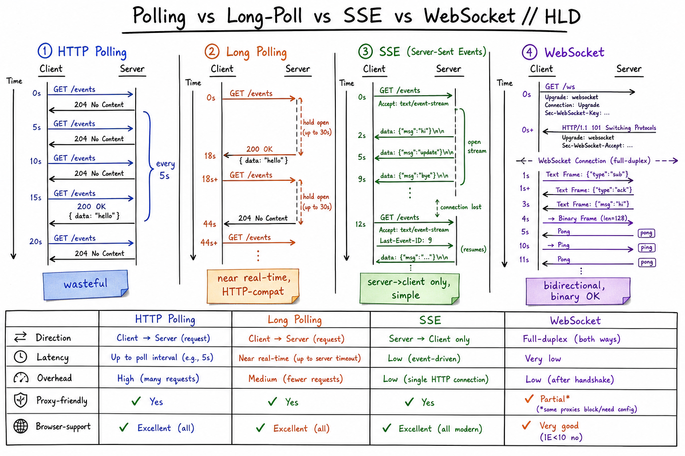
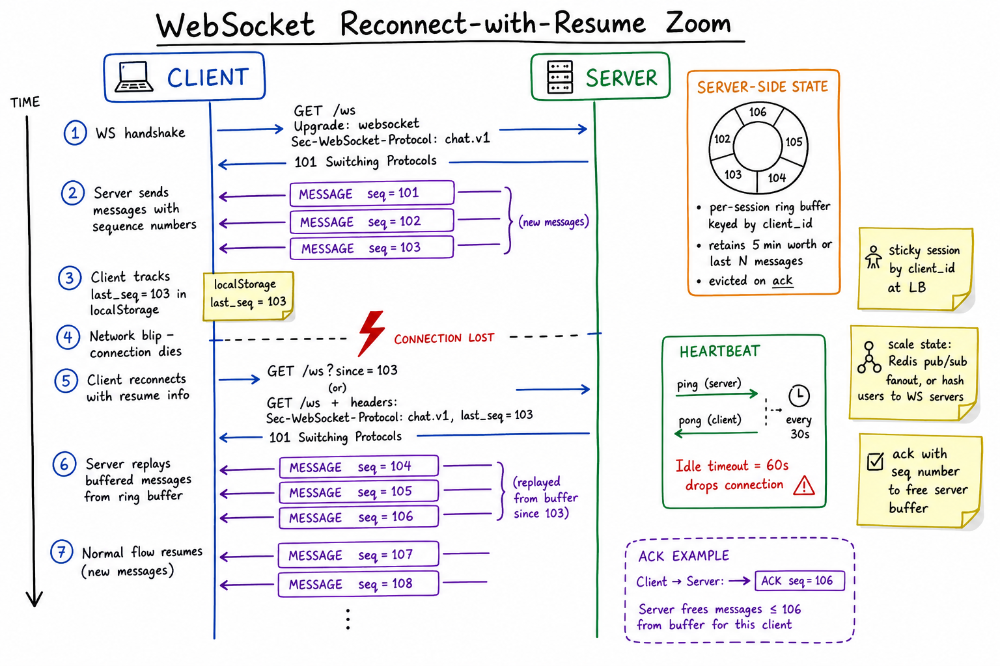

WebSocket / SSE / Long-Polling // Deep Dive
The three (and a half) server-to-client push options on the web. Each is the right answer somewhere — latency, direction, infrastructure compatibility, and operational cost all push you to a different choice.

Side-by-side timing of the four push options: HTTP polling (wasteful), long polling (HTTP-compatible near-real-time), SSE (simple server → client streaming), WebSocket (full-duplex framed). Bottom: trade-off matrix.
01 — Identity
Browsers initiate connections; servers don’t. Yet plenty of features (chat, live scores, dashboards, notifications) demand the server push data the moment it’s available. Over the years, four standard answers have emerged on plain HTTP:
- HTTP Polling — ask every N seconds. Simple, wasteful.
- Long Polling — ask, and let the server hold the request open until something happens. The original near-real-time hack.
- Server-Sent Events (SSE) — one long-lived HTTP response that streams text events. Server → client only.
- WebSocket (RFC 6455) — HTTP upgrades to a framed, full-duplex TCP connection.
Plus the modern fifth: gRPC server-streaming / HTTP/2 streams / HTTP/3 datagrams / WebTransport — effectively WebSocket-class without the upgrade dance, used heavily inside backends.
01a — Core Concepts
| Term | Meaning |
|---|---|
| HTTP polling | Client sends GET on a timer; server returns whatever is ready, often empty. |
| Long polling | Server holds the GET open (10s, 30s) until data is ready, then returns. Client immediately re-polls. |
| SSE | EventSource over HTTP text/event-stream. Server streams data: ...\n\n events; browser auto-reconnects with Last-Event-ID. |
| WebSocket | HTTP/1.1 Upgrade: websocket handshake → framed binary/text protocol on the same TCP connection. Full-duplex. |
| Frame | WebSocket message unit: opcode (text/binary/ping/pong/close), payload length, masking key, payload. |
| Ping/Pong | Application-level keepalive frames (opcode 0x9 / 0xA). Detect dead peers behind half-open TCP. |
| Subprotocol | Negotiated app-level protocol over WS (e.g. graphql-ws, mqtt, stomp, custom). |
| Sticky session | Load balancer pins a client to one backend so its connection state stays valid. |
| Origin shielding / WAF | Edge layers that may need WS-aware config (Cloudflare, ALB). |
| WebTransport | HTTP/3-based successor to WS — reliable + unreliable datagrams, multiple streams. Experimental but landing. |
01b — API / Wire Surface
HTTP polling (just GET)
setInterval(async () => {
const r = await fetch('/api/events?since=' + cursor);
const { events, next } = await r.json();
events.forEach(handle);
cursor = next;
}, 5000);
Long polling
# Client
async function loop() {
const r = await fetch('/api/events/long?since=' + cursor, {signal: ac.signal});
const { events, next } = await r.json();
events.forEach(handle);
cursor = next;
loop(); // immediate re-poll
}
# Server (pseudo)
GET /api/events/long?since=X
wait up to 30s for event > X, then return; or return 204 on timeout
SSE
const es = new EventSource('/api/stream');
es.onmessage = (e) => handle(JSON.parse(e.data));
es.addEventListener('order_update', (e) => ...);
es.onerror = () => { /* auto-reconnect with Last-Event-ID */ };
# Server (response):
Content-Type: text/event-stream
Cache-Control: no-cache
id: 1\ndata: {"x":1}\n\n
id: 2\nevent: order_update\ndata: {"x":2}\n\n
WebSocket
const ws = new WebSocket('wss://api.example.com/ws', ['chat.v1']);
ws.onopen = () => ws.send(JSON.stringify({type:'sub', topic:'orders'}));
ws.onmessage = (e) => handle(JSON.parse(e.data));
ws.onclose = () => setTimeout(reconnectWithBackoff, 1000);
# Handshake (HTTP/1.1 Upgrade):
GET /ws HTTP/1.1
Host: api.example.com
Upgrade: websocket
Connection: Upgrade
Sec-WebSocket-Key: dGhlIHNhbXBsZSBub25jZQ==
Sec-WebSocket-Protocol: chat.v1
Sec-WebSocket-Version: 13
HTTP/1.1 101 Switching Protocols
Upgrade: websocket
Connection: Upgrade
Sec-WebSocket-Accept: s3pPLMBiTxaQ9kYGzzhZRbK+xOo=
Sec-WebSocket-Protocol: chat.v1
The non-obvious contract: long polling, SSE, and WebSocket all need infrastructure tolerance for long-lived requests. Default LB idle timeouts (60s) and proxy buffering will kill or silently break them. WS-aware configuration on every hop is non-negotiable.
02 — When to Use / When NOT to Use
| Pick… | When… |
|---|---|
| HTTP Polling | Updates are infrequent & latency > 30s is fine. Trivial server, no special infra. Status badges, slow dashboards. |
| Long Polling | Need near-real-time but firewalls / proxies / older clients prevent WS or SSE. Comet-style fallback. |
| SSE | Server → client only, text payload, auto-reconnect desirable, you don’t want to maintain a stateful WS server. Notifications, live feeds, log tailing, dashboards. |
| WebSocket | Need bidirectional, low-latency, possibly binary. Chat, collaborative editing, multiplayer games, trading UIs, control planes. |
| HTTP/2 streams / gRPC-Web | Internal RPC or backend-to-edge streams. Use WebTransport when broadly supported. |
Don’t use WebSocket for one-way server-push when SSE would do — you’d be paying for an extra protocol surface (subprotocol design, your own ACKs, your own resume) you didn’t need.
03 — Architecture
Client Edge (CDN/LB) Origin (push service) State store
------ ------------- ----------------------- ------------
ws/sse/long-poll Redis pub/sub
-----------> sticky by client_id ----> WS gateway #N ---------
- holds connection Kafka topic
- subscribes to user's channel in Redis <-- (events)
- on message: encode + send frame
- heartbeat (ping every 30s)
- on disconnect: leave channel
<----------- pushed event ------------- sends WS frame / SSE event
- An edge tier terminates TLS and routes by client identity (sticky session).
- A gateway tier holds the open connection per user. Stateless except for that connection’s socket.
- A shared event bus (Redis pub/sub, Kafka, NATS) fans out events to the right gateway(s). Gateways subscribe to per-user / per-room channels.
- Application services publish events to the bus; they never know which gateway holds the user’s connection.
04 — The Comparison Matrix
| Polling | Long Poll | SSE | WebSocket | |
|---|---|---|---|---|
| Direction | Pull | Pull (hold) | Server → client | Full duplex |
| Min latency | ~poll interval | ~ms once event ready | ~ms | ~ms (sub-ms LAN) |
| Overhead | High (many TCP/TLS) | Medium | Low (one long resp) | Low after handshake |
| Protocol | HTTP/1.1 or 2 | HTTP/1.1 or 2 | HTTP/1.1 or 2 | HTTP/1.1 upgrade → binary frames |
| Binary payload | Base64 only | Base64 only | No (text) | Yes (native) |
| Auto-reconnect | n/a | You write it | Built into EventSource | You write it |
| Backpressure | n/a | Per-poll natural | TCP window | TCP window + app-level |
| Proxy friendliness | Anything | Anything (long timeouts) | Anything (long timeouts) | Needs WS-aware |
| Browser support | Universal | Universal | All modern | All modern (IE10+) |
| Server cost / conn | ~nil | Held thread/coroutine | One open FD | One open FD + state |
| Best for | Slow polling | Compat fallback | One-way real-time | Two-way real-time |
05 — WebSocket Internals
Handshake
Client sends an HTTP/1.1 GET with Upgrade: websocket and a base64-random Sec-WebSocket-Key. Server validates origin / subprotocol / auth, replies 101 Switching Protocols with Sec-WebSocket-Accept = base64(sha1(key + GUID)). After that, the TCP connection is no longer HTTP — both sides speak the WS framing protocol.
Frame
0 1 2 3 0 1 2 3 4 5 6 7 8 9 0 1 2 3 4 5 6 7 8 9 0 1 2 3 4 5 6 7 8 9 0 1 +-+-+-+-+-------+-+-------------+-------------------------------+ |F|R|R|R| opcode|M| Payload len | Extended payload length | |I|S|S|S| (4) |A| (7) | (16/64) | |N|V|V|V| |S| | (if payload len==126/127) | | |1|2|3| |K| | | +-+-+-+-+-------+-+-------------+ - - - - - - - - - - - - - - - + | (extended payload length continued, if > 16 bits) | | Masking-key (32, only if MASK=1, ALWAYS from client) | | Payload Data | +---------------------------------------------------------------+ opcodes: 0x0 cont, 0x1 text, 0x2 binary, 0x8 close, 0x9 ping, 0xA pong
Subprotocol design
WS gives you a pipe; you decide framing semantics inside. Practical choices:
- JSON envelope with
{type, id, payload}for human-readable debugging. - Binary (Protobuf / FlatBuffers) for high-volume, low-latency (trading, telemetry).
- Request/response correlation via
idif you piggyback RPC over WS. - Sequence numbers on server pushes so the client can detect gaps and trigger resume.
- Heartbeat via ping/pong opcodes every 30s; close on 2 missed pongs.
06 — Server-Sent Events Internals
Often underrated. The whole protocol is: one long-lived HTTP response with Content-Type: text/event-stream and lines like:
id: 123
event: order_update
data: {"order_id": "42", "status": "shipped"}
id: 124
data: pure-message-default-event
retry: 5000
: this is a comment / keepalive
- Auto-reconnect: if the connection drops, the browser’s
EventSourcewaitsretryms and reconnects with headerLast-Event-ID: 124. The server uses that to resume. - Server-only push; client → server still goes via regular AJAX. That’s perfect when the asymmetry is real.
- Works over HTTP/2 — no “6 connections per origin” limit issue.
- Goes through every HTTP-aware proxy/CDN. The 60s LB timeout still applies — send a
: ping\n\ncomment every 15–30s. - No binary. Use base64 if you must; otherwise pick WS.
For dashboards, notification feeds, log tailing — SSE’s built-in reconnect with last-event-id solves 80% of what you’d hand-roll on WS, with a quarter of the moving parts.
07 — Long Polling Done Right
Server side
- Park the request on a per-user / per-channel condition variable (or, in async runtimes, an awaitable future).
- Set a hard cap (e.g. 25 seconds — just under typical 30s LB idle timeout) so you always return something.
- On event: wake all parked requests for the channel; respond with the batch since the cursor.
- On timeout: return 204 with the unchanged cursor; client immediately re-polls.
Cursor / since marker
Use a server-side monotonic id (auto-increment, Kafka offset, log sequence). Never use a timestamp — clock skew between clients reads or skips events.
Why still use it
- Best HTTP compatibility — every proxy, every captive portal, every corporate firewall.
- Stateless server — nothing to maintain between requests except the parked future.
- Useful as the fallback when WS/SSE is blocked. Socket.io and SignalR do this transparently.

WebSocket reconnect with resume: server tags each message with a sequence number, client remembers last_seq in localStorage, reconnect handshake passes it back, server replays from its per-session ring buffer.
08 — Reconnect & Resume
Mobile networks drop. Laptops sleep. LBs cycle. Plan for reconnect from minute one; bolted on later it’s a horror.
Three pillars of a resumable WS protocol
- Sequence numbers on every server push. Client persists
last_seqlocally (in-memory + localStorage). - Replay buffer on the server, per session/user, retaining the last N messages or T seconds. Evicted on explicit ACK.
- Resume handshake: on reconnect, client sends
last_seq(in the URL, a subprotocol header, or the first frame). Server replays(last_seq, now]from the buffer, then resumes live.
If the buffer can’t replay (too old)
Server returns a “cold resume” signal: client re-bootstraps state via REST (full snapshot) and then resumes live from now. Don’t silently miss events.
Heartbeat
- Server sends
pingevery 30s; client mustpongwithin 10s. - Two missed pongs → assume zombie connection, close it. Connection counters and CPU love you.
- Idle timeout < LB’s idle timeout. Otherwise the LB kills you silently, you don’t notice for minutes.
09 — Scaling Connections
Numbers per server (modern Linux, tuned)
- ~50k concurrent WS connections per box is comfortable with default kernels.
- ~500k–1M per box is achievable with epoll-based runtimes (Go, Rust Tokio, Node cluster mode), tuned
ulimit -n,net.ipv4.ip_local_port_range, and ~1 KB state per conn. - TLS handshakes are CPU-expensive (~1ms / core / handshake). Cache TLS sessions, use connection re-use.
Stickiness & routing
- LB pins by client_id (cookie, query param, or hashed JWT subject), not by source IP — mobile users change IPs.
- Or hash
client_id → gateway shardconsistently so reconnects land on the same gateway (where the resume buffer lives). - Subscriptions live in a shared bus (Redis pub/sub for fan-out, Kafka for durable history). The gateway is otherwise stateless.
Deploying gateways
Rolling deploys must drain WS clients: 1) stop accepting new connections; 2) send a going_away close with a hint to reconnect; 3) clients reconnect, LB routes to new replicas, resume buffer replays. With 1M connections, drain over 5–15 minutes to avoid thundering reconnects.
10 — HTTP/2 & HTTP/3 Streams, WebTransport
HTTP/2 and HTTP/3 both support long-lived streams that can carry server-pushed events without an upgrade dance. SSE, gRPC server-streaming, and gRPC-Web all live on top of these.
- HTTP/2 streams: many independent streams per TCP connection. TCP head-of-line blocking still applies — one lost packet stalls all streams.
- HTTP/3 / QUIC: UDP-based; streams are independent at the transport layer (no TCP HoL). Better for mobile (faster recovery from cell handover).
- WebTransport: API on top of HTTP/3 that gives you both reliable streams and unreliable datagrams (great for games, telemetry, voice). Standardising; expect parity with WS once support is universal.
If you’re greenfield in 2026 and need bidi binary & you’re willing to limit to HTTP/3-capable clients, WebTransport is where this is heading. Until then, WebSocket remains the safe default.
11 — Operational Concerns
| Knob | Sweet spot | Why |
|---|---|---|
| Heartbeat interval | 30s ping, 10s pong timeout | Catches dead peers + keeps NAT mappings warm. |
| Server idle timeout | ~60–90s, > ping period × 2 | Disconnect zombies without killing healthy idle clients. |
| LB idle timeout | Higher than your heartbeat | ALB default 60s; tune up or your conns get reset mid-stream. |
| Max frame size | 1–4 MB | Larger frames stall other messages & fragment kernel buffers. |
| Resume buffer | 5 min or last 1000 msgs / user | Survives normal reconnects without exploding memory. |
| Max conns / gateway | 50–200k typical, 1M tuned | Headroom for traffic spikes & partial outages. |
Observability
- Per-gateway: open connections, msgs/sec in & out, p95 frame latency, broken-pipe rate.
- Per-user: queue depth, age of oldest buffered msg, last ack seq.
- Reconnect SLO: % of reconnects that successfully replay (vs cold-resume).
12 — Usage Patterns (back to A cheatsheets)
- FB Live Comments — WebSocket subscription to a live_id; fanout via Redis pub/sub; ABR initial bootstrap via REST.
- Google Docs — WS bidi for OT/CRDT ops; ack & resync after reconnect.
- Uber Tracking — WS bidi for driver pings + rider updates; HTTP fallback when WS blocked.
- Notification System — per-user channel on WS for in-app push; SSE for desktop web; long-poll fallback on hostile networks.
- Trading UIs — WS with binary subprotocol for tick streams.
13 — Alternatives
| Alternative | When to pick |
|---|---|
| WebTransport (HTTP/3) | Greenfield real-time apps when clients are modern & you want reliable streams + unreliable datagrams. Successor to WS in the long run. |
| HTTP/3 server-streaming | Server-push without the upgrade dance, when transport-layer HoL on mobile is your pain. |
| gRPC server / bidi streaming | Internal backend-to-edge real-time. Wire-compatible with WS-class semantics but type-safe + multiplexed. |
| MQTT | IoT / mobile. Tiny frames, QoS levels, topic-based pub/sub, designed for unreliable links. Often run over WS in browsers. |
| SignalR / Socket.io / Phoenix Channels | Higher-level libraries that abstract WS + long-poll fallback + reconnect/resume. Skip the protocol design. |
| libp2p | P2P transport with WS, WebRTC, QUIC adapters. For peer-to-peer apps (web3, mesh chat). |
| WebRTC DataChannel | Direct peer-to-peer (after signalling). Low-latency gaming, voice/video. |
14 — Interview Q&A
SSE vs WebSocket — how do you decide?
If the data flow is server-only and text-friendly, choose SSE: it’s plain HTTP, auto-reconnect with Last-Event-ID is built into the browser, debugging is curl-friendly, and there’s no extra protocol surface. Pick WebSocket when you need bidirectional, binary (game state, audio), sub-second round trips, or you’re piggybacking RPC. The decision is asymmetry of traffic, not just “real-time”.
Walk me through the WebSocket handshake.
Client sends an HTTP/1.1 GET with Upgrade: websocket, Connection: Upgrade, Sec-WebSocket-Key (16 random bytes, base64), Sec-WebSocket-Version: 13, and an optional list of subprotocols. Server replies 101 Switching Protocols with Sec-WebSocket-Accept = base64(sha1(key + GUID)) proving it understood the protocol. From there the TCP connection speaks WS framing (opcode + masked payload) and is no longer HTTP.
How would you design a resumable WS protocol?
Three pieces. (1) Sequence numbers on every server push; client persists last_seq in localStorage. (2) Per-session replay buffer on the server — last 5 min or N messages, evicted on ACK. (3) Reconnect handshake passes last_seq; server replays missed messages then resumes live. If the buffer can’t cover it, return a “cold resume” flag so the client re-bootstraps via REST. Never silently miss events.
You have 10M concurrent WS users globally. How do you scale?
Shard users to gateways by hash(user_id) → gateway via a sticky LB. Aim ~100–500k connections per gateway depending on tuning. Each gateway subscribes to its users’ channels in a shared bus (Redis pub/sub for low-latency fanout, Kafka for durable history). Application services publish events to the bus and don’t know which gateway holds whom. Per-region gateways + global event routing via Kafka MirrorMaker or a managed bus.
How do you handle a load-balancer idle timeout?
The LB defaults to ~60s idle and silently drops half-open connections, which the client only learns about when its next send fails. The fix is to send protocol-level keepalives more often than the LB’s timeout: WS ping/pong every 30s, SSE : comment every 15–30s, long-poll caps below the LB’s budget. Also configure the LB’s idle timeout above your heartbeat (e.g. 90s on ALB).
Why do servers struggle past ~50k WS connections without tuning?
Default ulimit -n caps file descriptors at 1024–65k. Each WS connection is an FD; multiply by sockets, log files, etc. Also: per-connection memory (kernel TCP buffers ~4–128 KB each), per-process limits, and ip_local_port_range. Tuning: raise ulimit to 1M, set net.core.somaxconn, use SO_REUSEPORT for accept distribution, and pick an epoll-based runtime so the connection cost isn’t one thread each.
Long polling vs WebSocket — when is long polling still right?
When infrastructure compatibility dominates — corporate firewalls / captive portals / older proxies that strip Upgrade headers. Long polling rides on plain HTTP so it goes everywhere. Use it as the fallback transport in Socket.io / SignalR-style libraries. The cost is more connection churn and slightly higher tail latency, but for low-event-rate apps the simplicity is worth it.
How does SSE auto-reconnect work?
Server tags each event with id: N. Browser’s EventSource caches the last id. On connection loss, it waits the server-suggested retry: 5000 ms (default 3s) and reconnects with header Last-Event-ID: N. The server uses that to resume the stream from N+1. No client code required — it’s in the browser API. That’s a big reason SSE punches above its weight.
Does WebSocket work over HTTP/2?
Yes, via RFC 8441 (“Bootstrapping WebSockets with HTTP/2”) using extended CONNECT. It’s a single stream per WS connection, so you can multiplex many WSes on one HTTP/2 connection. Browser support varies; many backends still terminate WS on HTTP/1.1. HTTP/3 has analogous mechanisms. Practically, WS-over-HTTP/1.1 is still the lowest common denominator for browser-facing services.
How do you secure WebSocket connections?
(1) Always use wss:// (WS over TLS). (2) Authenticate during the HTTP handshake — cookies (browser auto-sends), Authorization header, or a short-lived ticket from a prior REST call. (3) Validate the Origin header to prevent cross-origin WS hijacking. (4) Rate-limit per user. (5) Use a per-message subprotocol ID + sequence to detect replay / tampering. (6) Mask client → server frames (the protocol requires it; some servers wrongly trust unmasked).
WebTransport — should I use it now?
Not yet for browser-facing production. WebTransport over HTTP/3 gives you reliable streams + unreliable datagrams (great for games, voice, telemetry) without WS’s upgrade dance, and inherits HTTP/3’s mobile-network resilience. Browser + server library support is landing but inconsistent in 2026. Plan for migration once Safari + edge LB support is ubiquitous; meanwhile WebSocket remains the safe choice.
SDE-2 vs SDE-3 differentiation?
| SDE-2 | SDE-3 |
|---|---|
| Knows the four options & picks WS for chat / SSE for notifications | + handshake mechanics, subprotocol design, sequence + ring-buffer replay for resume, heartbeat & LB-timeout alignment, sticky-by-client_id + Redis pub/sub fanout, kernel/ulimit tuning at 1M conns, gateway drain during deploys, why SSE often beats WS for one-way push, HTTP/3 / WebTransport horizon |